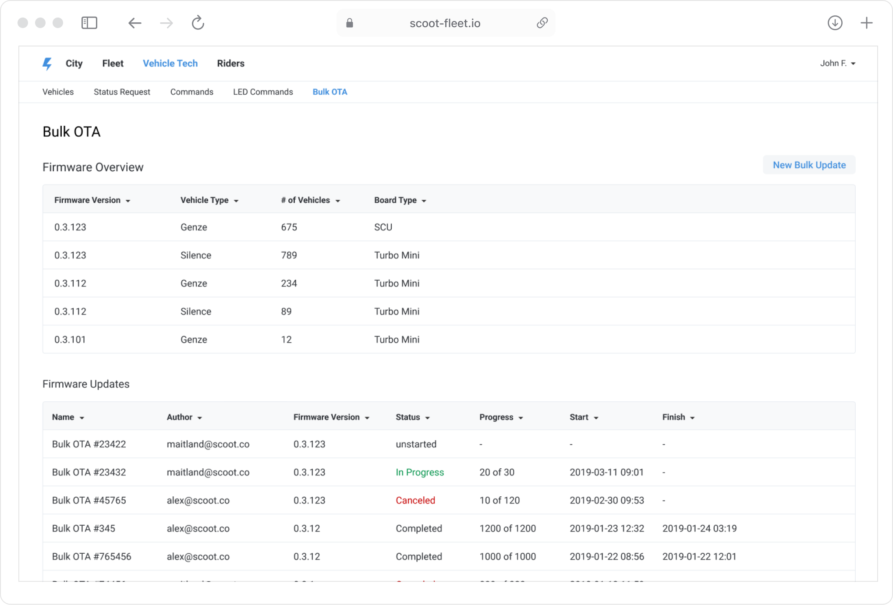
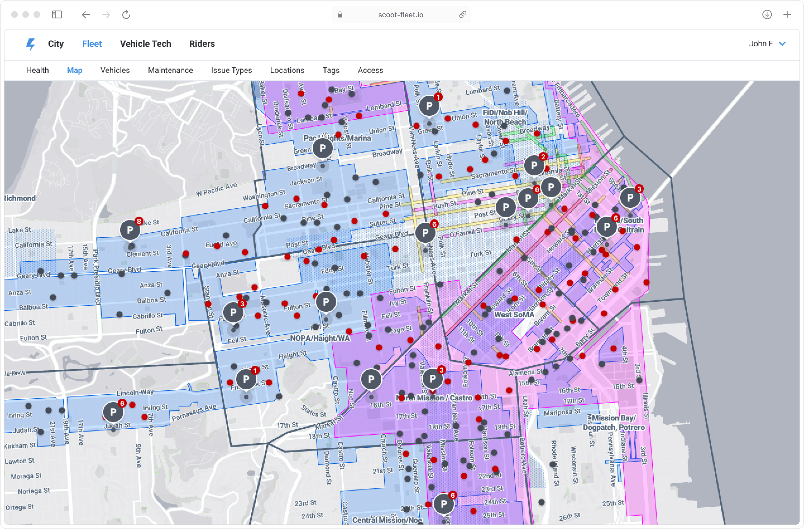
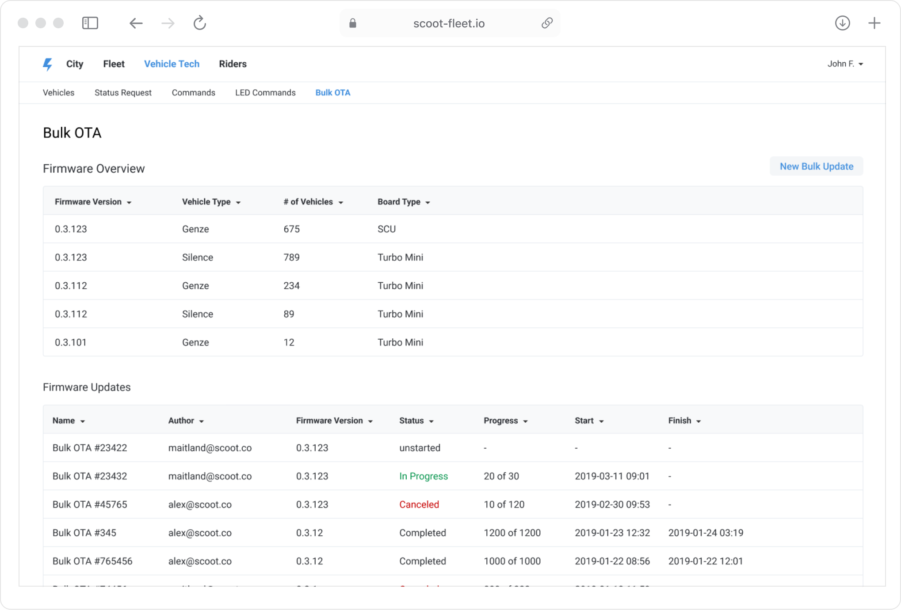
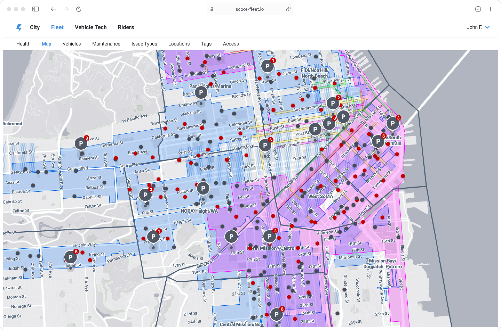

Scoot
Scoot, which later became part of Bird Scooters, offered a shared mobility service for booking electric scooters, e-bikes, and mopeds across the USA, South America, and Europe. As a Design Lead, I built and led an internal tools team, shaping research and team workflows. I also drove the launch of Scoot’s first mobile and desktop tools for fleet management, making operations smoother and more efficient.

 


